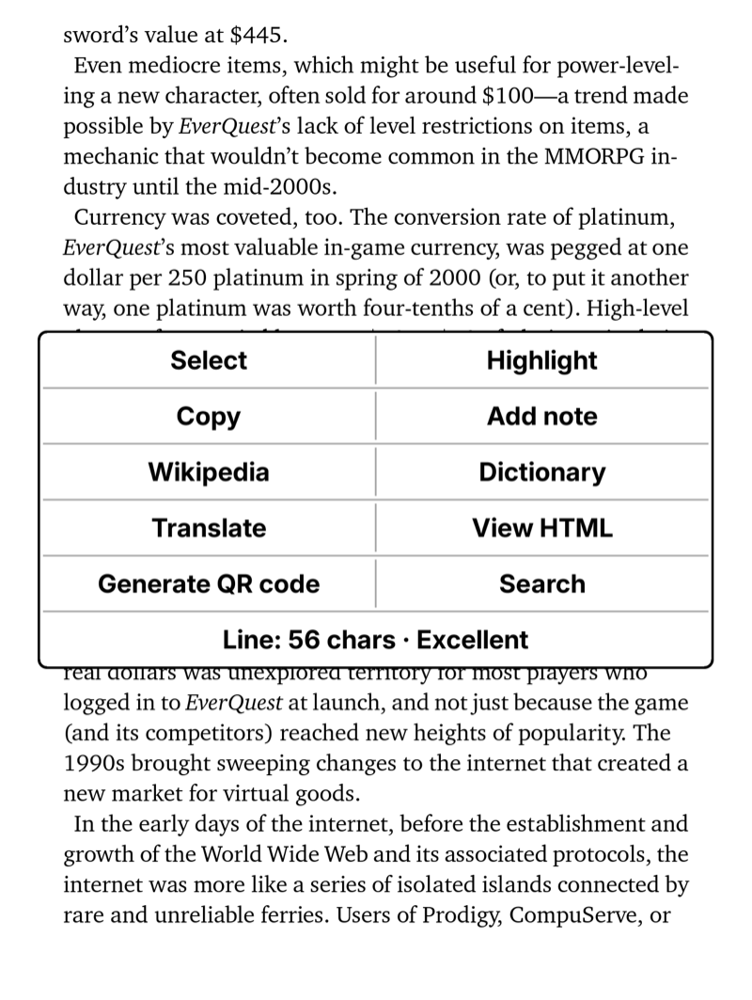
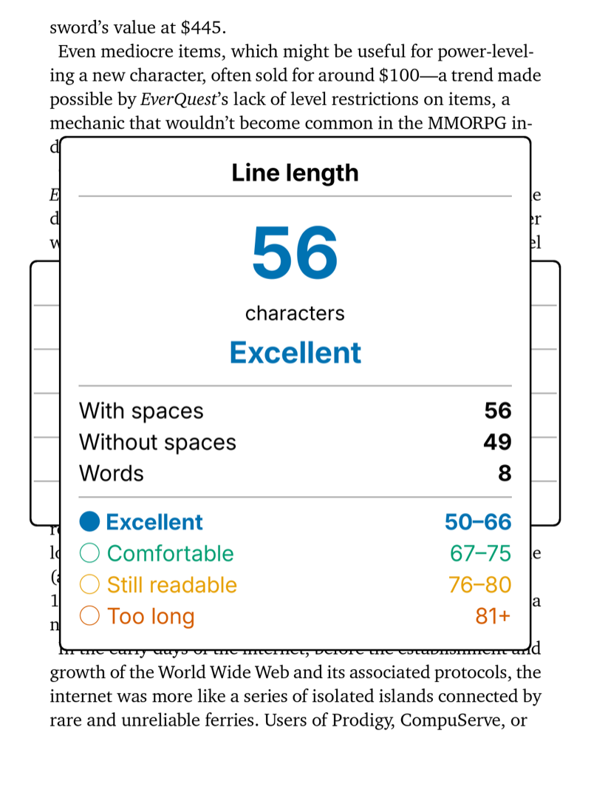
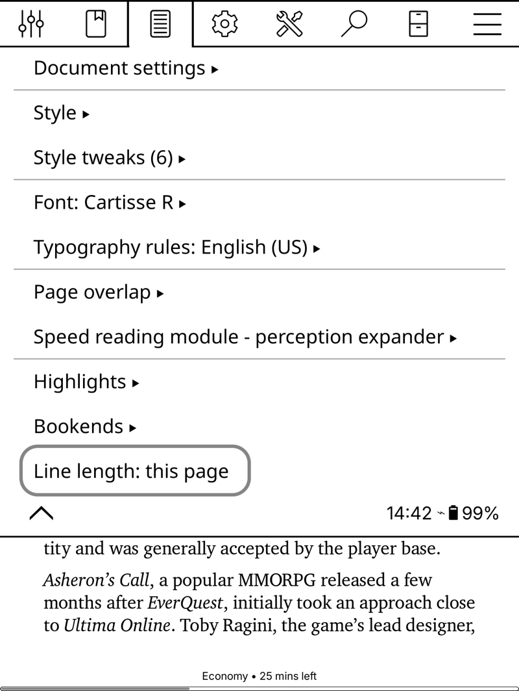
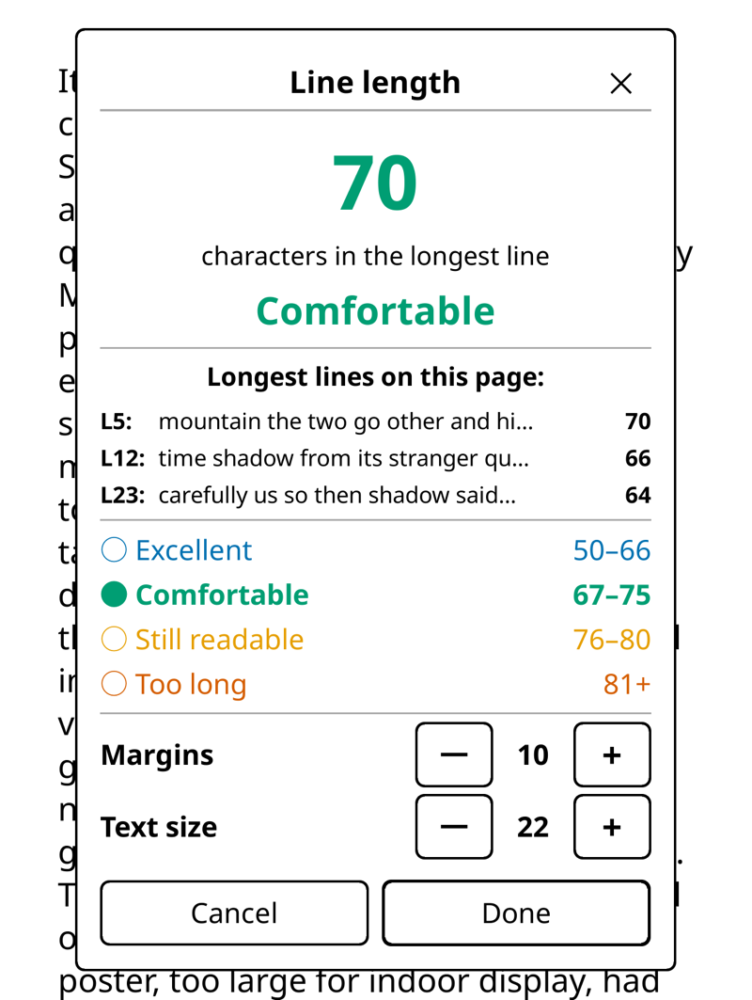

A plugin for KOReader
Is that line too long to read?
Line Length counts the characters on a line of your book and rates it from Short to Too long. Change the margins and the text size until it reads Excellent, without leaving your e-reader.
Tried on a Kobo Libra Colour with KOReader v2026.07.2. Free software, AGPL-3.0-or-later.
Try it: a page of text with the same controls
It is a truth universally acknowledged, that a single man in possession of a good fortune, must be in want of a wife.
However little known the feelings or views of such a man may be on his first entering a neighbourhood, this truth is so well fixed in the minds of the surrounding families, that he is considered as the rightful property of some one or other of their daughters.
“My dear Mr. Bennet,” said his lady to him one day, “have you heard that Netherfield Park is let at last?”
Mr. Bennet replied that he had not.
“But it is,” returned she; “for Mrs. Long has just been here, and she told me all about it.”
Mr. Bennet made no answer.
“Do not you want to know who has taken it?” cried his wife impatiently.
Drag the margins to see the longest line change. The page is Jane Austen, Pride and Prejudice (1813, public domain), from Standard Ebooks. This is a demo in your browser, not the plugin.
How it works
Two ways in: one line you select, or the whole page.
-
Select a line
Long-press the first word of a line and drag to the end of it. The highlight dialog gets one extra button, here
Line: 56 chars · Excellent. Tap it.
Screenshot from a Kobo Libra Colour. -
Read the verdict
The card shows the count with and without spaces, the word count and the four ranges, with yours marked. In justified text the lines differ by a few characters, so check two or three.

Screenshot from a Kobo Libra Colour. -
Check the whole page
Open the Typeset menu and tap Line length: this page. It is also in KOReader's gesture list. The verdict is the longest line's, not an average: the last line of every paragraph is short, so an average would say more about the paragraphs than about the lines.

Screenshot from a Kobo Libra Colour. -
Adjust until it reads Excellent
The page card lists the three longest lines. The Margins and Text size steppers change the layout, and a tap shrinks the card so you can watch the page. Accept keeps the change. Cancel puts the margins and the text size back. In landscape the card has two columns so it fits the screen.

Drawn by a desktop build of KOReader at the Libra Colour's size, with sample text.
What the ranges mean
Characters per line, spaces and punctuation included. The bands come from print typography and accessibility guidance. They are guidelines, and the sources do not agree to the character.
| Characters | Verdict | Basis |
|---|---|---|
| under 50 | Short | Below the 50 where Baymard and Ruder start |
| 50–66 | Excellent | Ruder's 50–60 up to the 66 Bringhurst calls ideal |
| 67–75 | Comfortable | Inside Bringhurst's 45–75 and Baymard's 50–75, past the ideal |
| 76–80 | Still readable | Past 75, within the 80 of WCAG 1.4.8 |
| 81 and more | Too long | Over the 80 of WCAG 1.4.8 |
These are for one column of Latin text. Bringhurst gives 40 to 50 for two columns, so a good two-column line shows as Short, and WCAG gives 40 glyphs for Chinese, Japanese and Korean.
On a colour screen with KOReader's colour rendering on, the plugin draws the verdict in the Okabe–Ito palette, which stays distinguishable with common forms of colour blindness. Otherwise it uses the normal text colour.
Sources: Bringhurst, The Elements of Typographic Style, 2.1.2, Baymard Institute, Readability: The Optimal Line Length, W3C, Success Criterion 1.4.8.
Why this exists
I wanted the lines of a book to land in the recommended range of characters per line. KOReader has no way to show that number, so I used to retype a line into a word counter, read off the characters, go back to the e-reader, change a setting and start again. This does the counting where the text is.
Install
- Download
linelength.koplugin.zipfrom the latest release and extract it. - Copy the
linelength.kopluginfolder into KOReader's plugins folder (on a Kobo,.adds/koreader/plugins/) and restart KOReader.
It works in books that reflow (EPUB, FB2 and the like), not in a PDF or a comic. The number is for one page: dialogue, indents and headings have other line lengths, so an Excellent line is a good start, not a guarantee.
It should work wherever KOReader runs, in black and white on a screen without colour, but only a Kobo Libra Colour (firmware 4.45, KOReader v2026.07.2) has been tried.
Storefront, the plugin browser for KOReader, lists it too.
Upgrading from Word count? Before version 0.7.0 this plugin was called Word count, in a folder named wordcount.koplugin. Delete that folder before you copy the new one, or both load and everything shows up twice.